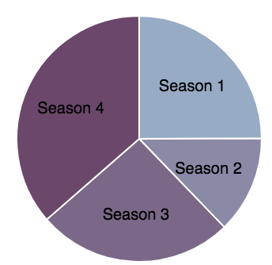

ORANGE IS THE NEW BLACK
Season 4 Recap: The Reality
The year long sentence is finally over, on June 9th we welcome season 5 of Orange is the New Black to Netflix! It seems like forever since we left our girls at Litchfield, gun in hand ready for the biggest season yet.
We surveyed you to find your favourite season:

But let’s rewind a bit, to the big old lesson in cause and effect that started in season 4.
Remember Caputo? New head of the prison, and sold the government owned prison to private corporation MCC to stop it from shutting down. Though maybe not the most entertaining part of the season, it was the first domino to fall in
this little lesson from the shows writers.
Privately owned prisons differ from government run facilities, as they are in it to make a profit. In Litchfield this meant making cuts wherever possible. At the start of season 4 we were introduced some new characters, as the amount of prisoners in the prison doubled without any changes to staff or facilities.
Orange is the New Black is scarily close to reality, as the number of inmates in privately run prisons in America has risen from 25,000 prisoners in 1980 to 220,000 in 2013. According to Time.
So after doubling the amount of prisoners, it makes sense to double the amount of guards – right? Well MCC didn’t think so.
They made up for the loss of guards by hiring inexperienced guards with little training, we’ll come back to this later, and veterans who could be hired on the cheap. This led to all sorts of mishaps, from officers accidentally pepper spraying themselves
to starting prison fights to bet on.
Let’s take a step back for a moment to remember about two characters we haven’t spoken about yet, Poussey and Bayley. Both Poussey and Bayley are around the same age, we even see them passing each other in a pre-jail flashback. They
share a love of books, people and going out. Both of them got caught smoking weed when they were younger, but Poussey got sentenced and Bayley got let off. That is where their stories split, one goes to prison and the other becomes a guard.
You might want to prepare yourself for the next part of this story:
Jody Owens, a lawyer from the Southern Poverty Law Centre told The Marshall Project that,
“Poor recruitment and training, and high attrition, create a situation in these facilities where the guards are always cycling through, don’t know how to exert control but through violence, and aren’t paid enough to care.'”
Showing Orange is the New Black’s basis in a harsh reality.
Poussey’s death was necessary, as painful as it was. Her death wasn’t caused by Bayley as the prison tried to play off to the media, but by the private prison company. They employed guards without giving them proper training, they doubled the prison Votes
causing the protest.
Poussey’s death was the match that ignited the riot that we left Litchfield on the brink of and became the inspiration for a lot of media attention surrounding the conditions that real life prisoners are faced with each day.

Toast can never be bread again, as the season finale title reminds us. After not even mentioning Poussey’s name in the press statement about her death, the prisoners start a riot.
The series ends with Diaz holding a gun to a guards’ head, a gun brought in illegally by a guard, a riot which could have been avoided.
Season five is set to take place over three action filled days, so what are you waiting for? Out on Netflix today on the 8th of June, its going to be a long weekend.
The top three people we can't wait to see back, chosen by the public. Have your say here.
Written by Jess Jones
Media content from Netflix's TV Show, Orange is the New Black